Questão 1 · Tratamento das taquicardias de QRS estreito · 4000190727Paciente feminina, 35 anos, sem comorbidades, admitida em leito de terapia intensiva após laparotomia exploradora por cisto de ovário roto. Após 12 horas de observação clínica, apresenta dor torácica de forte intensidade, palpitações, associada a dispneia súbita e hipotensão. Sem alterações neurológicas. Realizado eletrocardiograma abaixo. A conduta mais adequada neste caso é:
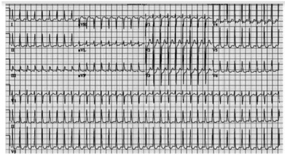
A Amiodarona 300mg em bolus.
B Amiodarona 150mg em bolus.
C Metoprolol 25mg via oral.
D Cardioversão elétrica.
Questão 2 · Conduta na taquiarritmia instável · 4000190491Paciente masculino, 72 anos de idade, trazido à sala de emergência após avaliação inicial pela enfermagem em protocolo de estrati cação de risco. Relata dor retroesternal em aperto, iniciada em repouso, há cerca de duas horas. Acompanha dispneia e tontura importante, com incapacidade para andar. Relata antecedente de miocardiopatia isquêmica em tratamento ambulatorial, e traz ecocardiograma recente com fração de ejeção de 30%. Ao exame físico, está vígil, orientado, sudoreico, pálido, com PA:70x40mmHg, SpO2:86%, pulsos nos e de difícil palpação. Ausculta sugere congestão pulmonar e o monitor mostrava QRS largo, com frequência cardíaca de 215bpm, registrado abaixo. Nesta situação, assinale a alternativa com a conduta adequada.
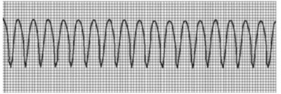
A Sedação com Propofol e cardioversão elétrica com 100J.
B Sedação com Propofol e cardioversão elétrica com 300J.
C Sedação com Etomidato e cardioversão elétrica com 300J.
D Sedação com Etomidato e cardioversão elétrica com 100J.
Questão 3 · Taquicardias ventriculares · 4000187286A classificação de acordo com sua duração em segundos da taquicardia sustentada (TVS) ou não sustentada (TVNS), está de acordo com o seguinte item correto:
A Se o período da arritmia for ou não superior a 90 s e/ou sem sintomas de instabilidade hemodinâmica.
B Se o período da arritmia for ou não inferior a 30 s e/ou sem sintomas de instabilidade hemodinâmica.
C Se o período da arritmia for ou não superior a 30 s e/ou sem sintomas de instabilidade hemodinâmica.
D Se o período da arritmia for ou não superior a 30 s e/ou sem considerar sintomas de instabilidade hemodinâmica.
Questão 4 · Tratamento das taquicardias de QRS estreito · 4000186509Mulher, 28 anos, chega ao pronto-socorro referindo que o coração está acelerado, gerando uma leve dispneia. Conta que iniciou enquanto varria a casa. Relata que não é a primeira vez que acontece, mas é a primeira vez que o quadro permanece por mais de 10 minutos. Ao Exame físico: Glasgow15, FR:22irpm, FC:180bpm, PA:120x70mmHg, SatO2:94%, glicemia capilar:95. Ausculta pulmonar normal. Sem outras alterações no exame físico. ECG realizado durante o atendimento a seguir: A conduta inicial indicada pela American Heart Asssociation para esta paciente é:

A Proceder manobra vagal modificada, soprando a seringa e elevando MMII.
B Iniciar anticoagulação com heparina e iniciar amiodarona endovenosa.
C Sedar a paciente e proceder cardioversão sincronizada imediatamente.
D Tranquilizar a paciente e prescrever beta-bloquador via oral.
Questão 5 · Tratamento das taquicardias de QRS largo · 4000186079Paciente de 55 anos, portador de Insuficiência Cardíaca com fração de ejeção de 22% decorrente de doença de Chagas, é trazido ao hospital por familiares por quadro de dispneia e confusão mental. Faz uso domiciliar de Furosemida 40mg ao dia, Carvedilol 25mg a cada 12 horas, Sacubitril-Valsartana 200mg a cada 12 horas e Espironolactona 25mg ao dia. Ao exame físico, o paciente apresenta-se com escala de coma de Glasgow com 10 pontos, Saturação de O2 88%, Pressão Arterial 72x44 mmHg e Frequência Cardíaca de 210bpm. Você observa o seguinte traçado no monitor cardíaco. Qual a conduta adequada?

A Realizar Cardioversão Elétrica Sincronizada imediatamente.
B Realizar infusão de Amiodarona 150mg em 10 minutos.
C Realizar infusão de Amiodarona 300mg em bolus.
D Realizar Desfibrilação Imediatamente.
E Realizar infusão de 1g de Sulfato de Magnésio.
Questão 7 · Eletrocardiograma · 4000183695Acesso em: 10 nov. 2022. Com base nessa figura e sabendo que o paciente refere batedeira, sem outras queixas, apresenta-se hemodinamicamente estável e com Glasgow 15, é correto afirmar que o ritmo cardíaco e o tratamento são, respectivamente,
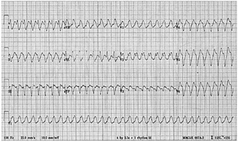
A fibrilação atrial e cardioversão elétrica.
B taquicardia supraventricular e amiodarona.
C bloqueio atrioventricular 2:1 e estudo eletrofisiológico.
D taquicardia ventricular sustentada e amiodarona.
E flutter atrial e adenosina.
Questão 8 · Outras taquiarritmias · 4000183508Paciente de 68 anos foi encaminhado ao serviço de emergência com queixas de palpitação há 2 horas, dispneia ao repouso, dor precordial em aperto e sudorese fria. Tem antecedentes de Diabetes Mellitus há 10 anos e Hipertensão arterial sistêmica há 20 anos. Tabagista de longa data. Tem dois irmãos com histórico de insu ciência coronariana. Após a realização do eletrocardiograma, anexado abaixo, qual seria a melhor conduta?
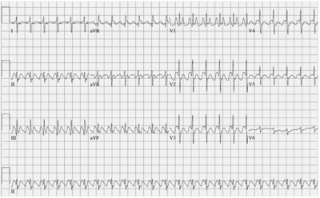
A Adenosina 6mg IV em bolus;
B Selozok 5mg IV em bolus;
C Cardioversão elétrica imediata com 100 J sincronizado;
D Amiodarona 300mg IV diluído em Soro Fisiológico em 15 minutos.
Questão 9 · Outras taquiarritmias · 4000182766Considerando-se o traçado eletrocardiográfico abaixo, de um paciente idoso, portador de insu ciência cardíaca, atendido em ambiente de Emergência, assinalar a alternativa CORRETA:
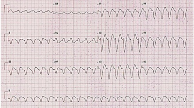
A O diagnóstico mais provável é de taquicardia supraventricular com condução aberrante.
B Deve-se realizar manobra vagal e, na ausência de resposta, administrar Adenosina, que, provavelmente, restaurará o ritmo sinusal nesse paciente.
C A presença de ondas P dissociadas do complexo QRS confirma o diagnóstico de taquicardia ventricular.
D O intervalo entre o início da onda R até o nadir da onda S, menor do que 100ms nas derivações precordiais, confirma o diagnóstico de taquicardia ventricular.
Questão 10 · Outras taquiarritmias · 4000182580Paciente de 65 anos apresenta quadro de dor torácica há 15 minutos, associado à sudorese. Ele refere ser tabagista. Neste momento, sua pressão arterial encontra-se em 90 x 60 mmHg, sua saturação de oxigênio em ar ambiente está em 90% e apresenta o traçado eletrocardiográfico a seguir. A conduta mais indicada a ser tomada é

A desfibrilação com energia inicial de 200 J.
B cardioversão com energia inicial de 100 J.
C cardioversão em energia inicial de 120 J.
D amiodarona 150 mg em bomba de infusão.
E adenosina 6 mg como dose inicial.
Questão 11 · Outras taquiarritmias · 4000181619Um homem de 46 anos procura atendimento médico de urgência com queixa de palpitações e dor torácica do tipo aperto, de início há aproximadamente 1 hora. Seus sinais vitais são aferidos: • PA: 70x40mmHg (Pressão arterial); • FC: 190bpm (Frequência cardíaca); • SatO2: 88% (Saturação de oxigênio). E seu eletrocardiograma (ECG) é o seguinte: Nesse caso, conforme as informações apresentadas, é correto afirmar que

A se trata de uma taquicardia supraventricular, e o uso da manobra vagal modificada está indicado.
B a avaliação de um especialista deve ser prioritária.
C o uso de atropina 1mg endovenosa (EV) está indicado.
D a cardioversão elétrica sincronizada está indicada.
E um estudo eletrofisiológico deve ser realizado antes de qualquer intervenção terapêutica.
Questão 12 · Outras taquiarritmias · 4000181366Paciente de 26 anos, sexo masculino, acompanhado por esquizofrenia é atendido na emergência por importante agitação. Foi realizada contenção física e administrado 10mg de haloperidol. Após 30 minutos, paciente está torporoso, pouco responsivo, com pressão arterial de 60x30mmHg, taquicárdico com pulso liforme, saturação periférica de O₂ de 95%. Ainda não há exames laboratoriais disponíveis. Eletrocardiograma realizado foi o seguinte: Conferir figura correspondente com melhor resolução no anexo (FIGURA) Qual a melhor conduta a ser adotada?
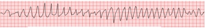
A Infusão de sulfato de magnésio.
B Infusão de cloreto de potássio.
C Imediata cardioversão elétrica.
D Imediata desfibrilação.
Questão 13 · Antiarrítmicos · 4000169036No tratamento medicamentoso das arritmias cardíacas é recomendável a prevenção de efeito pró-arrítmico evitando-se
A procainamida em dose acima de 1 mg/min.
B utilizar mais de uma droga antiarrítmica juntas ou em sequência.
C lidocaína em
D administrar adenosina rapidamente.
E amiodarona em menos de 1 hora.
Questão 14 · Síndrome de Wolf f ParkinsonWhite · Fibrilação Atrial · 4000167782Um paciente de 45 anos de idade vem apresentando sintomas de palpitação, mal-estar e sudorese profusa no decorrer da hemodiálise. Em cada sessão, são ultra ltrados 4 litros em duas horas e meia. Na última diálise, o paciente cou com hipotensão = 85 mmHg x 40 mmHg, SatO2 = 94% em ar ambiente e frequência cardíaca conforme o eletrocardiograma a seguir. Fonte: 150 ECGs Com base nesse caso clínico e nos conhecimentos médicos correlatos, julgue o item a seguir. Cardioversão é o melhor tratamento para manejo agudo.

A Certo.
B Errado.
Questão 15 · Síndrome de Wolf f ParkinsonWhite · Fibrilação Atrial · 4000167781Um paciente de 45 anos de idade vem apresentando sintomas de palpitação, mal-estar e sudorese profusa no decorrer da hemodiálise. Em cada sessão, são ultra ltrados 4 litros em duas horas e meia. Na última diálise, o paciente cou com hipotensão = 85 mmHg x 40 mmHg, SatO2 = 94% em ar ambiente e frequência cardíaca conforme o eletrocardiograma a seguir. Fonte: 150 ECGs Com base nesse caso clínico e nos conhecimentos médicos correlatos, julgue o item a seguir. O risco de morte súbita para esse paciente é elevado em relação à população normal.

A Certo.
B Errado.
Questão 16 · Síndrome de Wolf f ParkinsonWhite · Fibrilação Atrial · 4000167780Um paciente de 45 anos de idade vem apresentando sintomas de palpitação, mal-estar e sudorese profusa no decorrer da hemodiálise. Em cada sessão, são ultra ltrados 4 litros em duas horas e meia. Na última diálise, o paciente cou com hipotensão = 85 mmHg x 40 mmHg, SatO2 = 94% em ar ambiente e frequência cardíaca conforme o eletrocardiograma a seguir. Fonte: 150 ECGs Com base nesse caso clínico e nos conhecimentos médicos correlatos, julgue o item a seguir. Tratamento com sotalol é o padrão-ouro, no caso desse paciente, para tratamento em longo prazo.

A Certo.
B Errado.
Questão 17 · Síndrome de Wolf f ParkinsonWhite · Fibrilação Atrial · 4000167779Um paciente de 45 anos de idade vem apresentando sintomas de palpitação, mal-estar e sudorese profusa no decorrer d a hemodiálise. Em cada sessão, são ultra ltrados 4 litros em duas horas e meia. Na última diálise, o paciente cou c o m hipotensão = 85 mmHg x 40 mmHg, SatO2 = 94% em ar ambiente e frequência cardíaca conforme o eletrocardiograma a seguir. Fonte: 150 ECGs Com base nesse caso clínico e nos conhecimentos médicos correlatos, julgue o item a seguir. Provavelmente, no período do eletro de repouso, o intervalo PR seja normal.

A Certo.
B Errado.
Questão 18 · Outras taquiarritmias · 4000167345Homem, 62a, procura atendimento médico com queixa de tontura e dispneia de início agudo há 2 horas. Antecedentes: hipertensão arterial e diabetes mellitus tipo 2, em uso de losartana, besilato de anlodipino e metformina. Exame físico: FC= 152 bpm, FR= 28 irpm, PA= 96x62 mmHg, oximetria de pulso (ar ambiente) = 88%; consciente, orientado, sonolento; pulmões: murmúrio vesicular presente com estertores crepitantes nos bilaterais até campos médios pulmonares. ECG realizado na sala de emergência: O DIAGNÓSTICO E A CONDUTA SÃO:
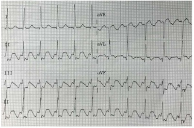
A Taquicardia por reentrada nodal; cardioversão elétrica sincronizada.
B Flutter atrial 2:1; cardioversão elétrica sincronizada.
C Taquicardia por reentrada nodal; manobra de Valsalva modificada.
D Flutter atrial 2:1; betabloqueador e anticoagulação. ida oib pr ed
Questão 19 · Outras taquiarritmias · 4000167127Qual das seguintes taquiarritmias apresenta complexo QRS estreito e regular?
A Fibrilação atrial.
B Torsades de Pointes.
C Taquicardia atrial.
D Taquicardia de movimento circular antidrômica.
E Flutter atrial com bloqueio AV variado.
Questão 20 · Tratamento · Outras taquiarritmias · Taquicardias ventriculares · 4000167111Um homem de 57 anos procura atendimento médico com queixa de palpitações e dor torácica tipo aperto, de início há 30 minutos. Apresenta hipotensão (PA 60x40mmHg). Após avaliar o ritmo mostrado a seguir, qual é a conduta mais adequada?
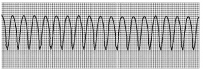
A Manobra vagal.
B Adenosina 6mg EV em bólus.
C Amiodarona 150mg EV em 30 minutos.
D Deslanosídeo 0,8mg EV em bólus.
E Cardioversão elétrica sincronizada.
Questão 21 · Outras taquiarritmias · 4000166302Mulher, 28 anos de idade, sem antecedentes patológicos, procurou PS com queixa de palpitações de início súbito, sem outros sintomas associados, há 1 hora. Ao exame físico, PA = 110 x 70 mmHg, FC = 170 bpm, SpO₂ = 99%. ECG de admissão a seguir. Qual é o tratamento indicado?
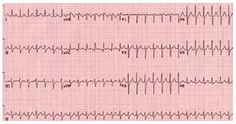
A Amiodarona intravenosa.
B Betabloqueador intravenoso.
C Cardioversão elétrica.
D Adenosina intravenosa.
Questão 22 · Outras taquiarritmias · 4000164828Você está em um pronto atendimento e avalia um paciente com quadro de palpitações. Ao exame físico ele encontra-se com PA de 120x70 mmHg, FC de 180bpm e uma SpO2 de 99%, bulhas cardíacas taquicardicas e sem sopros, ausculta pulmonar sem alterações. No monitor é visualizado o traçado abaixo: Qual a sua conduta?
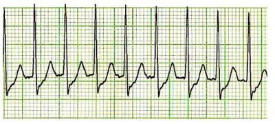
A Infunde Adenosina na dose de 18mg por via intravenosa.
B Infunde Amiodarona na dose de 150mg por via intravenosa.
C Realiza Cardioversão elétrica sincronizada.
D Aplica manobras vagais ao paciente.
Questão 23 · Outras taquiarritmias · 4000164657Considere um paciente masculino, 68 anos, antecedentes prévios de infarto agudo do miocárdio e hipertensão arterial sistêmica. Encontra-se internado na UTI há 2 dias devido à sepse de foco urinário. Subitamente apresenta um episódio de taquiarritmia com QRS alargado com duração superior a trinta segundos, frequência cardíaca em torno 200 bpm, pressão arterial 120/60 mmHg. Assinale a alternativa correta em relação à taquiarritmia descrita acima
A O tratamento indicado é a adenosina.
B Estatisticamente é mais provável tratar-se de uma taquicardia ventricular.
C A pressão arterial estando normal descarta a possibilidade de taquicardia ventricular.
D Se a origem desta taquicardia for supraventricular, o comportamento esperado é mais maligno quando comparado à origem ventricular
E Não é necessária a diferenciação entre taquicardia ventricular e taquicardia supraventricular com aberrância de condução, pois o tratamento será o mesmo para os dois tipos
Questão 24 · Tratamento · Outras taquiarritmias · 4000164379Paciente sexo feminino, 27 anos, deu entrada no pronto-socorro referindo palpitações taquicárdicas associada a mal-estar. A avaliação apresentava PA: 126 × 74 mmHg, FC: 180 bpm, FR: 16 ipm, SatO₂: 98%. Paciente realizou seguinte eletrocardiograma: O tratamento mais indicado para esse paciente, dentre os abaixo, é:
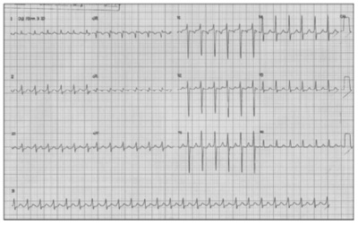
A atropina endovenosa em
B amiodarona endovenoso.
C cardioversão elétrica sincronizada.
D manobra de valsalva.
Questão 25 · Eletrocardiograma · 4000164378Paciente sexo feminino, 27 anos, deu entrada no pronto-socorro referindo palpitações taquicárdicas associada a mal-estar. A avaliação apresentava PA: 126 × 74 mmHg, FC: 180 bpm, FR: 16 ipm, SatO₂: 98%. Paciente realizou seguinte eletrocardiograma: O diagnóstico mais provável desse paciente, dentre os abaixo, é:

A Taquicardia supraventricular.
B Fibrilação atrial de alta resposta ventricular.
C Flutter
D Taquicardia ventricular
Questão 26 · Outras taquiarritmias · 4000143556Na taquicardia paroxística supraventricular a frequência cardíaca é de
A 120 a 180 bpm.
B 160 a 220 bpm.
C 200 a 260 bpm.
D 130 a 190 bpm.
E 130 a 200 bpm.
Questão 27 · Taquicardias ventriculares · 4000142154Uma paciente com infarto prévio há 60 dias apresentou-se com mal-estar e dispneia. Foi solicitado eletrocardiograma, cuja imagem pode ser observada a seguir. Disponível em: <https://pt.my-ekg.com/>. Acesso em: 8 jan. 2021. (Figura ampliada na página 15) De acordo com a análise desse eletrocardiograma, nesse caso clínico, o diagnóstico é
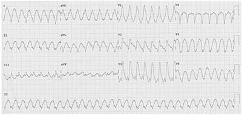
A fibrilação atrial.
B taquicardia ventricular fascicular.
C taquicardia ventricular do ventrículo esquerdo.
D taquicardia ventricular do ventrículo direito.
E displasia arritmogênica de ventrículo direito.
Questão 28 · Tipos específ icos de taquiarritmias · Tratamento das taquicardias de QRS estreito · 4000140997Paciente jovem, 19 anos, com história de palpitações taquicárdicas ocasionais, com duração <10 segundos. Chega ao pronto-socorro, com a mesma queixa de palpitações, associada a sensação desconfortável de pulsação no pescoço e náuseas, com duração há mais de 15 minutos. Realizado o eletrocardiograma que está ilustrado a seguir. Ao exame físico da admissão na sala de emergência, apresentava: temperatura axilar 36,1 C, PA = 120 x 80 mmHg, SpO2 = 97% e auscultas cardíaca e pulmonar normais. Assinale a alternativa que contém a primeira opção medicamentosa para a resolução do quadro clínico dessa paciente.

A Diazepam 20 mg IV.
B Amiodarona 300 mg IV.
C Esmolol 15 mg IV.
D Adenosina 6 mg IV.
E Diltiazem 100 mg IV.
Questão 29 · Outras taquiarritmias · 4000140996Paciente jovem, 19 anos, com história de palpitações taquicárdicas ocasionais, com duração <10 segundos. Chega ao pronto-socorro, com a mesma queixa de palpitações, associada a sensação desconfortável de pulsação no pescoço e náuseas, com duração há mais de 15 minutos. Realizado o eletrocardiograma que está ilustrado a seguir. Ao exame físico da admissão na sala de emergência, apresentava: temperatura axilar 36,1 C, PA = 120 x 80 mmHg, SpO2 = 97% e auscultas cardíaca e pulmonar normais. Das características eletrocardiográficas presentes na figura, determina(m) o diagnóstico dessa taquiarritmia:

A frequência cardíaca menor que 100 bpm.
B complexo QRS estreito (< 120 ms).
C ausência de onda T.
D intervalos RR irregulares.
E presença de onda U.
Questão 30 · Betabloqueadores · 4000131264Os betabloqueadores pertencem a qual classe de antiarrítmicos?
A V.
B IV.
C III.
D II.
Questão 31 · TV polimórf ica · 4000131058Paciente de 46 anos apresenta-se na emergência com confusão mental e hipotensão. Ao realizar a monitorização apresenta-se com o traçado abaixo. Após receber terapia elétrica e droga antiarrítmica o paciente apresentou melhora. Sobre esse traçado, qual seria a droga antiarrítmica adequada e qual o mecanismo fisiopatológico que pode desencadeá-la?
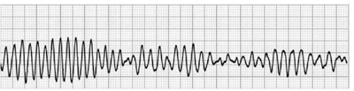
A Amiodarona – Intervalo QT Longo
B Sulfato de Magnésio – Intervalo QT Longo
C Procainamida – Intervalo QT Longo
D Amiodarona – Intervalo PR Curto
Questão 32 · Abordagem inicial · Tratamento das taquicardias de QRS estreito · 4000124270Paciente do sexo masculino, 42 anos de idade, chega ao departamento de emergência com história de palpitações. Um traçado eletrocardiográfico foi obtido demonstrando taquicardia de complexo QRS estreito e FC de 190bpm e pressão arterial sistólica de 100/80 mmHg. Qual a primeira conduta?
A Cateterismo de urgência.
B Manobra vagal com compressão do seio carotídeo.
C Adenosina.
D Atenolol.
E Ablação por cateter.
Questão 33 · Tratamento da TVFV · 4000114138Qual seria o diagnóstico e a melhor conduta para um paciente sem pulsos palpáveis e com a imagem, abaixo, no monitor:
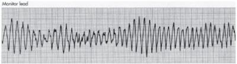
A Taquicardia supraventricular e cardio versão elétrica sincronizada com 100 Joules.
B Taquicardia ventricular sem pulso e adrenalina 1mg IV em bolus.
C Taquicardia ventricular polimórfica e cardioversão elétrica com choque sincronizado de200 Joules.
D Taquicardia ventricular polimórfica e desfibrilação com 200 Joules.
Questão 34 · Abordagem inicial · História clínica e anamnese · Eletrocardiograma · 4000099004Homem, 63a, procura o Pronto Socorro queixando-se de dor no peito em aperto com irradiação para face medial de ambos os braços, sudorese e cansaço. No eletrocardiograma de entrada foi detectado supradesnivelamento do segmento ST em derivações anterolaterais. Após abordagem inicial o monitor mostrou o traçado a seguir: A CONDUTA IMEDIATA É:

A Desfibrilação.
B Checar pulso.
C Amiodarona 300 mg endovenosa.
D Cardioversão elétrica sincronizada.
Questão 35 · Conduta na taquiarritmia instável · Tratamento das taquicardias de QRS estreito · 4000076149Critérios de instabilidade Uma paciente de 38 anos, internada para tratamento cirúrgico de litíase biliar sintomática, relata início súbito de palpitações e dispneia leve. Ao exame físico, encontra- se taquicárdica (170bpm) e sem congestão pulmonar. O ritmo cardíaco é regular, em dois tempos e sem sopros. O eletrocardiograma revela taquicardia regular de complexos QRS estreitos, sem onda P visível, com a frequência de disparos anteriormente assinalada. A conduta indicada, nesse momento, é realizar:
A aplicação de cardioversão elétrica sincrônica de 100J
B administração intravenosa de 5mg/kg de amiodarona
C administração intravenosa de 6mg de adenosina
D passagem de marcapasso cardíaco transvenoso
Questão 36 · Taquicardia sinusal · 4000072724Paciente do sexo feminino, 85 anos, é admitida em unidade de tratamento intensivo com quadro de torpor, hipotensão (80 x 40 mmHg) e taquicardia, com o seguinte traçado de ritmo ao monitor cardíaco. Qual a conduta imediata indicada neste caso?
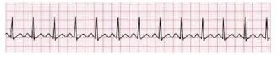
A Hidratação venosa.
B Cardioversão elétrica.
C Infusão de amiodarona por via intra-venosa.
D Manobra vagal.
E Infusão de atropina por via intra-venosa.
Questão 37 · Taquicardia atrial multif ocal · 4000014490Paciente de 23 anos, com palpitações, apresenta o eletrocardiograma a seguir. Qual o diagnóstico?
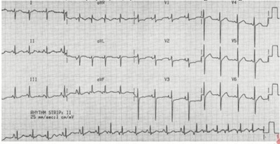
A Fibrilação atrial.
B Taquicardia sinusal.
C Taquicardia atrial unifocal.
D Taquicardia atrial multifocal.
E Taquicardia atrial incessante.
Questão 38 · Síndrome de Wolf f ParkinsonWhite · 4000116150Faz parte da síndrome de Wolff-Parkinson-White, exceto:
A Intervalo PR < 0,12 segundos
B QRS > 0,12 segundos
C Não progressão das ondas R
D Onda delta
E Presença de alterações secundárias da onda T
Questão 39 · TV idiopática · 4000115559Paulo, 52 anos, apresenta-se na emergência com confusão mental, palpitação cardíaca, dispneia e com a pressão arterial de 60/40 mmHg. Com base no eletrocardiograma realizado (abaixo), assinale a alternativa que representa o diagnóstico eletrocardiográfico e a melhor conduta para Paulo.
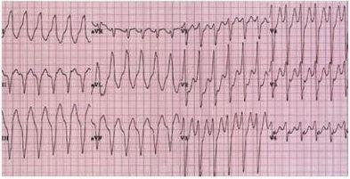
A Taquicardia ventricular e amiodarona endovenosa 150 mg.
B Taquicardia supraventricular e amiodarona endovenosa 150 mg.
C Taquicardia ventricular e cardioversão elétrica sincronizada com 100 Joules.
D Taquicardia ventricular e cardioversão elétrica não sincronizada com 100 Joules
Questão 40 · Conduta na taquiarritmia instável · 4000113210Homem, 60 anos, tabagista, hipertenso crônico, em tratamento irregular, apresentou há 12h palpitação de início súbito seguida de síncope. Nega episódios de arritmias. Exame físico: PA= 120 X 60 mmHg, FC= 140 bpm, FR= 32 irpm, agitado, confuso, estase jugular bilateral, estertores crepitantes em bases pulmonares, arritmia cardíaca, pulso liforme e edema 2+/4+ em MMII. ECG: fibrilação atrial com resposta ventricular de alta frequência. A conduta imediata é:
A Anticoagulação
B Cardioversão elétrica sincronizada
C Desfibrilação
D Lanatosídeo IV
E Metoprolol IV.
Questão 41 · Tratamento das taquicardias de QRS estreito · 4000111239Uma mulher de 50 anos é admitida na sala de emergência em taquicardia paroxística com complexo QRS estreito. Se o plantonista optar por uma droga com mais de 90% de sucesso, com curta duração de efeito e pouca ação hipotensora a melhor escolha será:
A verapamil.
B adenosina.
C quinidina.
D amiodarona.
Questão 42 · Taquicardia por reentrada nodal · 4000100411Homem de 52 anos de idade procura a Unidade de Pronto atendimento (UPA) com queixa de mal-estar e palpitação há 25 minutos. Foi levado à sala de emergência, onde realizaram um exame eletrocardiográfico com o seguinte traçado. Qual é o diagnóstico eletrocardiográfico?
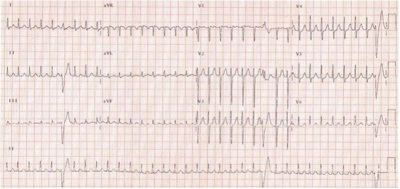
A Taquicardia ventricular.
B Fibrilação atrial.
C Taquicardia por reentrada nodal.
D Flutter atrial.
Questão 43 · Conduta na taquiarritmia instável · Indicações de cateterismo · 4000091203Homem de 73 anos de idade, tabagista, dislipidêmico e hipertenso, acordou com quadro de dor precordial em queimação associado à diaforese e náuseas, de início há 30 minutos. Chegou à Unidade de Pronto Atendimento (UPA), sendo administrado AAS de 300 mg e realizado eletrocardiograma que demostrou ritmo sinusal e infradesnível descendente de 3 mm de V1 a V6. No momento em que seria administrado o dinitrato de isossorbida sublingual, apresentou quadro de síncope, com pulsos ainda palpáveis e PA 92x64 mmHg, sendo evidenciada nova alteração na monitorização eletrocardiográfica, mostrada na figura abaixo. De acordo o caso descrito, o tratamento mais adequado é:
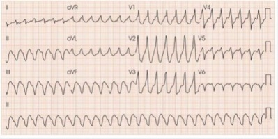
A administrar amiodarona IV dose de ataque e manutenção e encaminhar para realização de angioplastia primária em até 2 horas.
B administrar amiodarona IV dose de ataque e manutenção e encaminhar para cinecoronariografia em até 24 horas.
C realizar cardioversão elétrica sincronizada com 200 J bifásico e encaminhar para cinecoronariografia de emergência.
D reallizar cardioversão elétrica sincronizada com 200 J bifásico e, caso o tempo estimado para realização de angioplastia seja maior que 2 horas, administrar trombolítico.
E realizar cardioversão elétrica sincronizada com 100 J bifásico e sollicitar marcadores cardíacos.
Questão 44 · Antiarrítmicos · 4000049887Qual das seguintes medicações representa um exemplo de antiarrítmico classe I de Vaughan- Williams?
A Verapamil.
B Atenolol.
C Sotalol.
D Lidocaína.
Questão 45 · Escores de avaliação de risco tromboembólico e hemorrágico · Anticoagulação oral · 4000025121Eletrocardiograma M.S.B. é um senhor de 76 anos de idade que chegou ao pronto socorro com queixa de dor abdominal intensa iniciada há cerca de uma hora. O exame físico do paciente mostrava ausculta revela ritmo cardíaco irregular e frequência cardíaca acima de 140bpm. Abdome sem sinais de irritação peritoneal, com dor difusa e intensa. O eletrocardiograma realizado mostrava irregularidade no complexo QRS e ausência de onda "P". A taquiarritmia apresentada pelo paciente, a causa da dor abdominal e o exame complementar a para possibilitar a realização do diagnóstico são, respectivamente:
A fibrilação atrial, isquemia mesentérica e a angiotomografia de abdome.
B taquicardia supraventricular, isquemia mesentérica e tomografia de abdome com contraste.
C taquicardia ventricular, angina mesentérica e enterorressonância do abdome.
D fibrilação atrial, angina mesentérica e enterotomografia de abdome.
Questão 46 · Síndrome de Wolf f ParkinsonWhite · Fibrilação Atrial · 4000010578Uma paciente de 45 anos de idade sente tontura, pressão no peito e fadiga há três horas. Durante o exame, verifica-se que ela apresenta níveis pressóricos de 80 mmHg x 50 mmHg e FC = 140 bpm, associada a má perfusão periférica. Ao ECG, nota-se que ela tem brilação atrial, sendo que um ECG basal prévio mostrou ondas delta. A respeito desse caso clínico, assinale alternativa correta.
A Essa paciente não possui risco de taquicardia ventricular, pois a respectiva fibrilação atrial possui complexo QRS estreito, assim o risco maior seria evolução para taquicardia supraventricular.
B A onda delta indica a presença de extrassístoles ventriculares (provável disfunção do nó sinusal); assim, o diagnóstico para esse caso é fibrilação atrial com complexo de QRS alargado.
C A terapia de escolha para essa paciente seria administração de betabloqueadores, com objetivo de redução da frequência cardíaca.
D A terapia com verapamil é uma opção aceitável para ser realizada nessa paciente em caráter de emergência, em razão da rápida absorção e objetivando a redução da frequência cardíaca e do inotropismo cardíaco.
E O diagnóstico clínico dessa paciente é fibrilação atrial em uma paciente portadora de síndrome de Wolff- Parkinson-White, indicado pelas ondas delta no ECG anterior, que mostram uma via acessória ao nó atrioventricular para a comunicação elétrica.
Questão 47 · Antiarrítmicos · 4000111803Em relação a classificação dos antiarrítmicos de Vaughn-Williams; podemos afirmar que:
A Quinidina, Procainamida e Diisopiramida pertencem a classe la
B Amiodarona, Propafenona e Lidocaina são bloqueadores de canais de Cálcio
C Verapamil eEsmolol são bloqueadores de canais de Potássio
D Propranol e Sotalol pertecema classe lc
E Propafenona, Digoxina, Adenosina pertencem a classe IV
Questão 48 · Taquicardia por reentrada nodal · 4000102636Homem de 52 anos de idade procura o pronto-socorro de clínica médica com queixa de palpitação há 30 minutos. Foi levado à sala de emergência, onde foi realizado o seguinte eletrocardiograma. Qual é o diagnóstico eletrocardiográfico?
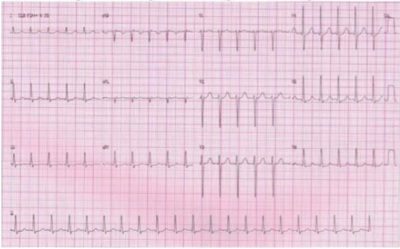
A Taquicardia ventricular.
B Fibrilação atrial.
C Taquicardia por reentrada nodal.
D Flutter atrial.
Questão 49 · Tireotoxicose induzida pela amiodarona · Fibrilação atrial · Bloqueadores dos canais de potássio · 4000098999Mulher, 52a, diabética, em uso de metformina 1.700 mg/dl, é diagnosticada com brilação atrial em janeiro de 2016. Ecocardiograma e dosagens de TSH e T4 livre realizados em fevereiro de 2016 não mostram alterações. Em março de 2016, faz cardioversão e inicia uso contínuo de amiodarona. Em abril de 2017 refere perda de peso de 4 Kg e taquicardia há 2 meses. Nesta época, faz novos exames, que mostram TSH = < 0,01 alternativa CORRETA é:

A Hipertireoidismo não detectado no exame de abril de 2016.
B Há indicação de cardioversão.
C Betabloqueador está contraindicado.
D Hipertireoidismo induzido por amiodarona em 2017.
Questão 50 · Tratamento das taquicardias de QRS estreito · 4000051942Paciente jovem admitida na emergência com queixa de palpitação de início súbito há cerca de 40 minutos com sensação do "coração batendo no pescoço". Encontra-se acordada, lúcida, eupneica em ar ambiente com ausculta pulmonar sem alterações e normotensa. Nega dor torácica. Eletrocardiograma demonstrando FC de 180 bpm, QRS estreito, intervalo RR regular e não visualizado onda P. Como você classificaria clinicamente essa paciente? Após estabelecido monitorização cardíaca contínua, de pressão arterial, oximetria de pulso e acesso venoso qual a primeira conduta?
A instável / Cardioversão elétrica sincronizada
B estável / Manobra vagal
C estável / Adenosina EV
D estável / Betabloqueador EV
Questão 51 · Taquicardia por reentrada nodal · Cardiologia · 4000038458Um paciente de 48 anos, sem doenças prévias, procura a Emergência com queixa de palpitações, mal-estar generalizado, sudorese fria e cefaleia occipital iniciadas a cerca de 1 hora. Ao exame físico, mostrava PA = 120x70 mmHg, FC = 168 bpm e FR = 26 mrpm. As enzimas cardíacas foram dosadas e estavam normais, e o ECG de repouso está demonstrado abaixo. Após a monitorização cardíaca contínua e acesso venoso, o que o clínico faria para tratar essa arritmia?
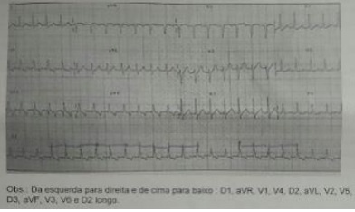
A Procainamida IV.
B Metoprolol IV.
C Amiodarona IV.
D Adenosina IV.
E Digital IV.
Questão 52 · Tratamento das taquicardias de QRS estreito · 4000119098Mulher de 32 anos apresenta palpitação e sensação de que o coração está batendo no pescoço, há 40 minutos. Nega outras queixas. Exame físico: PA = 120 x 70 mmHg; SatO2 = 94% em ar ambiente; ausculta pulmonar sem alterações. ECG (25 mm/s): derivação DII a seguir. (Conforme imagem ) O diagnóstico, frequência cardíaca e adequada conduta são:
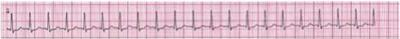
A Taquicardia paroxística supraventricular; 120 bpm; propranolol 40 mg, via oral.
B Taquicardia paroxística supraventricular; 150 bpm; adenosina 6 mg, via intravenosa.
C Fibrilação atrial; 150 bpm; amiodarona 300 mg, via intravenosa.
D Fibrilação atrial; 180 bpm; cardioversão elétrica sincronizada 50 J.
Questão 53 · TV em paciente com cardiopatia estrutural · 4000110698Homem de 52 anos, com insu ciência cardíaca com fração de ejeção reduzida (FE: 30%), realiza um Holter de 24h em virtude de palpitações. O Holter mostra episódios de taquicardia ventricular sustentada com estabilidade hemodinâmica. O melhor antiarrítmico para esta situação é
A Propafenona.
B Verapamil.
C Digoxina.
D Amiodarona.
E Adenosina.
Questão 54 · Tratamento das taquicardias de QRS estreito · 4000109955Na taquicardia paroxística supraventricular mais frequente (reentrada nodal), a droga que não está indicada é:
A Betabloqueador.
B Adenosina.
C Verapamil.
D Lidocaína.
Questão 55 · Cardioversão elétrica · Cardiologia · 4000106094Mulher de 28 anos de idade em tratamento de hipertireoidismo, há 1 mês com tapazol, refere há 1 hora palpitações intensas e tontura. Ao exame clínico, PA = 80 x 48 mmHg. Feito o eletrocardiograma a seguir: A conduta deve ser
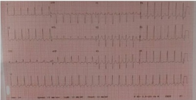
A Adenosina endovenosa.
B Cardioversão elétrica 200 J.
C Metoprolol endovenoso.
D Cardioversão elétrica 50 J.
Questão 56 · Taquicardia sinusal · 4000099830O traçado abaixo sugere o diagnóstico de: (Conforme imagem do caderno de questões)
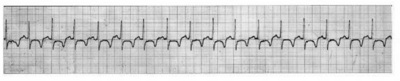
A Taquicardia sinusal.
B Flutter atrial 4:1.
C Fibrilação atrial.
D Taquicardia supraventricular paroxística.
Questão 57 · Conduta na taquiarritmia instável · Tratamento · História clínica e anamnese · 4000098548Um paciente de 62 anos, 70 kg, do gênero masculino, com história prévia de hipertensão arterial, dá entrada no setor de urgência com taquicardia paroxística, frequência cardíaca = 193 bpm; PA = 70 x 40 mmHg e sinais de instabilidade hemodinâmica. Feito o acesso venoso, monitorização eletrocardiográ ca e oxigenoterapia, é CORRETO a rmar que a conduta médica mais apropriada a ser seguida é:
A Uso de amiodarona endovenosa, em bolus de 300-600 mg, e observar resposta clínica em 2 horas.
B Cardioversão elétrica sincronizada, com carga aproximada entre 100 e 200 Joules.
C Hidratar abundantemente, realizar anamnese e exame físicos detalhados, solicitar exames bioquímicos e aguardar os resultados, enquanto se estabiliza o quadro do paciente.
D Somente decidir a conduta terapêutica após a realização urgente de ecocardiograma bidimensional com Doppler.
Revisar: possível letra faltando em enunciado
Questão 58 · Síndrome de Wolf f ParkinsonWhite · Eletrocardiograma · 4000090839Menino de 14 anos, com palpitações seguidas de tonturas ao realizar exercícios na escola, foi encaminhado para avaliação. A liberação para a realização das atividades físicas estaria condicionada aos resultados dos exames. O eletrocardiograma de repouso está reproduzido abaixo: O quadro clínico e o traçado eletrocardiográfico de repouso estabelecem o diagnóstico de:

A Bloqueio de ramo esquerdo.
B Taquicardia atrial paroxística.
C Síndrome de Wolff-Parkinson-White.
D Fibrilação atrial paroxística.
E Arritmia sinusal.
Questão 59 · Outras taquiarritmias · Eletrocardiograma · Arritmias Cardíacas · 4000085474Na síndrome de Brugada, os achados encontrados no eletrocardiograma são:
A Bloqueio do ramo direito e supradesnivelamento do segmento ST em V1a V3.
B Bloqueio do ramo esquerdo e onda P apiculada.
C Bloqueio do ramo direito e infradesnivelamento do segmento ST em V1 a V3.
D Segmento PR curto.
E Onda delta.
Questão 60 · Taquicardia por reentrada sinusal · Taquicardia sinusal inapropriada · Outras causas de tireotoxicose · 4000078026Paciente jovem, obesa, iniciou uso de “fórmula para emagrecer” há 4 semanas. Vem queixando-se de mal-estar nos últimos quatro dias e hoje pela manhã apresentou taquicardia e pré-síncope. Foi atendida em UPA onde realizou o eletrocardiograma abaixo. Sobre o caso, marque a resposta correta: (Conforme imagem )
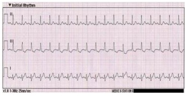
A A paciente deverá ser submetida à reversão imediata da arritmia com uso de amiodarona.
B Por tratar-se de paciente jovem, sem comorbidades, pode-se optar por reversão da arritmia com propafenona.
C Como é impossível precisar que a arritmia começou a menos de 48 horas, é indicada anticoagulação plena e realização de ecocardiograma transesofágico para que se possa programar a reversão da arritmia com segurança.
D Cardioversão elétrica deve ser realizada imediatamente.
E Não há indicação de reversão do ritmo e deverá ser realizada dosagem de hormônios tireoidianos e suspensão do medicamento em uso.
Questão 61 · Taquicardia atrial multif ocal · 4000123671Homem de 76 anos foi admitido no serviço de emergência com queixa de palpitações taquicárdicas e refere ser portador de insuficiência cardíaca. Foi realizado o eletrocardiograma, mostrado a seguir. (VER IMAGEM) O diagnóstico eletrocardiográfico e o exame para esclarecimento da causa do ritmo cardíaco apresentado são, respectivamente:
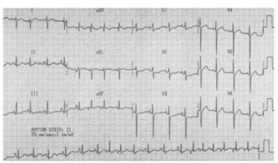
A Fibrilação atrial, sorologia para Chagas.
B Taquicardia sinusal, hemoglobina glicada.
C Taquicardia atrial multifocal, nível sérico de digoxina.
D Taquicardia sinusal, d-dímero.
E Taquicardia juncional, sorologia para Chagas.
Questão 62 · Conduta na taquiarritmia instável · 4000095232Assinale a alternativa que responde corretamente à pergunta abaixo. Homem de 50 anos é internado com história de dispneia e dor torácica. Está acordado, ansioso, apresenta frequência respiratória de 26 irpm e os pulsos periféricos são fracos. Sua pressão arterial é de 80 x 50 mmHg. Seu eletrocardiograma é apontado abaixo. Diante deste quadro, qual é o diagnóstico mais provável e qual a conduta mais adequada?
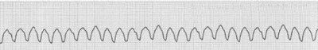
A Taquicardia instável – cardioversão imediata e sedoanalgesia com morfina e propofol.
B Taquicardia estável – cardioversão imediata e sedoanalgesia com fentanila e midazolam.
C Taquicardia estável – cardioversão química com amiodarona.
D Taquicardia instável – cardioversão imediata e sedoanalgesia com fentanila e etomidato.
E Fibrilação ventricular – desfibrilação imediata.
Questão 63 · Tratamento das taquicardias de QRS estreito · 4000054698Paciente feminina de 35 anos procura o pronto atendimento referindo palpitações taquicárdicas, sendo observada frequência cardíaca de 176 bpm e pressão arterial de 110 x 70 mmHg. Com base no ECG realizado, apresentado na figura, qual a conduta mais adequada?
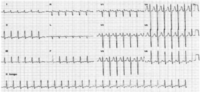
A Adenosina Endovenosa (EV) 6 mg.
B Cardioversão elétrica, iniciando com 100 J.
C Desfibrilação elétrica, iniciando com 100 J.
D Verapamil EV 5 a 10 mg.
E Amiodarona EV 150 mg.
Questão 64 · Distúrbios de ritmo cardíaco · Torsades de pointes · 4000045892As seguintes afirmativas se aplicam ao traçado eletrocardiográfico abaixo reproduzido, EXCETO:
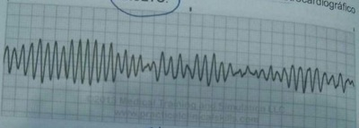
A No tratamento dessa arritmia, está contraindicada a administração intravenosa do sulfato de magnésio, que deve ser reservada para o tratamento de algumas arritmias supraventriculares.
B O traçado eletrocardiográfico basal dos pacientes acometidos por essa arritmia costuma exibir prolongamento, congênito ou adquirido, do intervalo QT.
C Paradoxalmente, essa arritmia pode ser desencadeada por drogas antiarrítmicas das classes IA e III.
D Trata-se de uma modalidade de taquicardia ventricular polimórfica conhecida como torsades des pointes.
Questão 65 · Cardiologia · 4000014533Quando iniciamos o tratamento de taquiarritmias de QRS estreito, devemos considerar que
A A Adenosina deve ser feita em bolus, de vez que sua metabolização é endotelial.
B A Lidocaína apresenta bom efeito atrial.
C A Amiodarona em bolus apresenta-se como opção segura.
D Sempre está indicada cardioversão química.
Questão 66 · Taquicardia Supraventricular TSV · 4000009242Mulher de 22 anos de idade, chegou ao PS com palpitações taquicárdicas há cerca de 30 minutos sem outras queixas clínicas ou antecedentes. Sinais vitais de chegada: FC = 180 bpm; PA = 120 x 80 mmHg; T = 36°C; saturação O2 = 98%; FR = 12 irpm. Ao exame: BEG, corada, acianótica, vígil, anictérica, pulmões limpos, RCR em 2T, BNF sem sopros, abdome normal. ECG mostrado na figura. (VER IMAGEM) Qual a conduta inicial?
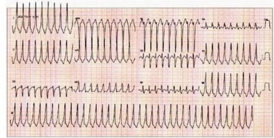
A Amiodarona 150 mg IV em 10 minutos.
B Adenosina 6 mg IV em bolus.
C Manobra vagal.
D Verapamil 10 mg IV.
E Cardioversão elétrica.
Questão 67 · Conduta na taquiarritmia instável · 4000123275Homem de 65 anos, com história de infarto do miocárdio há 1 mês, procurou atendimento em emergência, tendo sido diagnosticado edema agudo de pulmão. O eletrocardiograma realizado está reproduzido a seguir. (VER IMAGEM) Qual o manejo apropriado para o tratamento da arritmia?
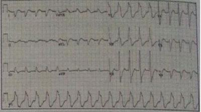
A Isossorbida sublingual.
B Adenosina intravenosa.
C Cardioversão elétrica.
D Digoxina intravenosa.
E Amiodarona intravenosa.
Questão 68 · TV em paciente com cardiopatia estrutural · Betabloqueadores · 4000027464Homem de 56 anos vem para consulta de rotina apresentando Holter com raros episódios de taquicardia ventricular não sustentada, assintomáticos. É portador de miocardiopatia dilatada por miocardite prévia, apresentando fração de ejeção de 38% e atualmente em classe funcional I (NYHA). Na terapia antiarrítmica nesse paciente, verifica- se que:
A Betabloqueador é medicação de escolha para prevenção de morte súbita.
B Não há necessidade de terapia antiarrítmica específica nesses casos.
C Amiodarona é medicação de escolha devido à presença de arritmias ventriculares.
D Propafenona é medicação de escolha, pois não interfere na função ventricular.
Questão 69 · Medicações usadas para controle do ritmo cardíaco · Bloqueadores dos canais de potássio · 4000108586A fotossensibilidade, disfunção tiroideana, pneumonite intersticial, disfunção hepática e neuropatia periférica são efeitos adversos particularmente relacionados ao uso crônico de:
A Quinidina.
B Propafenona
C Amiodarona
D Procainamida
Questão 70 · Bloqueadores dos canais de potássio · 4000050255Considerando pacientes em uso crônico de amiodarona, o efeito adverso mais comum relacionado ao uso da medicação é:
A hipotireoidismo.
B fibrose pulmonar.
C alteração de enzimas hepáticas.
D ataxia, polineuropatia.
E microcristais de córnea.
Questão 71 · Betabloqueadores · Bloqueadores dos canais de potássio · 4000077462Paciente senhora de 74 anos, portadora de HAS, e DAC prévia, com angioplastia em 2009, e histórico de episódios de taquicardia atrial sustentadas. Usuária de AAS, Sinvastatina, Mononitrato, Enalapril, Sotalol. Com relação à terapêutica antiarrítmica: Qual o principal efeito colateral possível, nesse caso:
A Bradiarritmias, principalmente disfunção sinusal.
B Bradiarritmias, principalmente disfunção nodal AV, gerando BAV de alto grau e BAVT.
C Prolongamento do potencial de ação, com aumento do QT, favorecendo a ocorrência de TV monomórfica, por reentrada.
D Prolongamento do potencial de ação, com aumento do QT, favorecendo a ocorrência de TV polimórfica, por atividade trigada, tipo “Torção das Pontas”.
Questão 72 · Outras taquiarritmias · 4000099875As afirmativas sobre o uso da adenosina no tratamento de arritmia cardíaca estão corretas, exceto:
A A adenosina é útil no tratamento dos pacientes com taquicardia supraventricular.
B As injeções intravenosas rápidas de adenosina em doses de 6 mg a 12 mg interrompem mais de 90% das taquicardias supraventriculares.
C O verapamil IV ainda é o medicamento preferível para interromper imediatamente uma taquicardia supraventricular.
D A adenosina é útil no diagnóstico das taquicardias com QRS amplo.
E Ruborização, dispneia e pressão no peito são efeitos colaterais comuns do tratamento com adenosina.
Questão 73 · Tireotoxicose induzida pela amiodarona · Etiologia · Bloqueadores dos canais de potássio · 4000075863O uso de amiodarona pode ocasionar:
A Hipotireoidismo
B Hipertireoidismo.
C Hipotireoidismo e Hipertireoidismo.
D Enfisema pulmonar.
E Síndrome nefrítica.
Questão 74 · Conduta na taquiarritmia instável · Critérios de instabilidade · 4000023080Homem de 68 anos é admitido em uma emergência trazido por familiares. Apresentava dispneia intensa e tontura há 30 minutos, de início súbito. O paciente é hipertenso, em uso de losartana. Exame físico: orientado, dispneico 3+/4+, PA 130 x 90 mmHg, crepitações na metade inferior de ambos os pulmões, sem edema de extremidades. Administrado O2 e diurético, sem melhora, evoluindo com dor torácica anginosa. ECG da admissão a seguir. Qual a conduta recomendada nesse contexto?
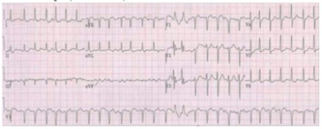
A Cardioversão elétrica.
B Amiodarona endovenosa.
C Parecer de um especialista.
D Massagem dos seios carotídeos.
Questão 75 · Diagnóstico e investigação adicional · Apresentação clínica · Diagnóstico etiológico da hiponatremia · 4000008837Paciente 65 anos, diabética, com antecedente de uso de amiodarona por arritmia cardíaca controlada evolui, em 3o pós- operatório de colecistectomia, com confusão mental e sonolência. Seus sinais vitais estão normais, não tem dispneia, dor torácica e os exames mostram hiponatremia (Na = 120 mEq/L) com glicemia e eletrocardiograma normais. São, respectivamente, a causa mais provável e o exame a ser solicitado:
A insuficiência renal e creatinina
B tromboembolismo pulmonar e dímero-D
C hipotireoidismo e TSH
D acidente vascular cerebral e tomografia computadorizada de crânio
E sepse e hemoculturas
Questão 76 · Síndrome de Wolf f ParkinsonWhite · 4000077879Taís, 31 anos, apresentou perda da consciência há algumas semanas. Diabetes mellitus desde os 8 anos. Há três meses apresentou glicemia de jejum de 150 mg/dl, hemoglobina glicada (método HPLC) de 8,3; proteinúria (++). Seu médico sugeriu intensi cação das atividades aeróbicas e ajustou as doses de insulina para 40 U de insulina NPH humana + 5 U de insulina regular, antes do desjejum e 10 U de NPH humana + 10 U de insulina regular 30 minutos antes do jantar. Após algumas semanas, os níveis de glicemia de jejum passaram a variar entre 70 e 90 mg/dl e a média nunca ultrapassou 150 mg/dl. Há três semanas, pela primeira vez na vida, apresentou palpitações, seguidas de perda da consciência. Recuperou-se rapidamente e foi levada à emergência, aonde chegou acordada, lúcida, sem lesões traumáticas e com leves abalos clônicos faciais. Foi medicada com glicose intravenosa. Posteriormente teve 3 episódios de náuseas, sudorese, palpitação e borramento da visão, porém sem perda da consciência. Ganhou 3 kg nos últimos meses. Refere trabalhar muito por vezes não consegue almoçar, fazendo “lanche ” e não tem condições de automonitorar.Tinha crises de hipoglicemia na infância. Nega tabagismo, etilismo ou uso de drogas ilícitas. Peso: 72 kg. Sinais vitais: tax = 36°C, PA = 126 x 16 mmHg, FC = 62 bpm, FR = 15 bpm. Fundoscopia normal. Exame físico sem alterações. Exames laboratoriais: Hemoglobina:15,3 g/dl; leucometria: 5.500 mm3 (diferencial normal), ureia 20 mg/dl, creatinina 1,0 mg/dl, glicemia de jejum 66 mg/dl; colesterol total 160 mg/dl, HDL 45 mg/dl, LDL 100mg/dl, triglicerídeos 120 mg/dl, hemoglobina glicada 8,0 %; EAS normal; microalbuminúria= 42 mg/24 horas; cortisol sérico (60 min após teste da cortrosina) 25µ/dl: Eletrocardiograma (ECG) de repouso: (VER IMAGEM)
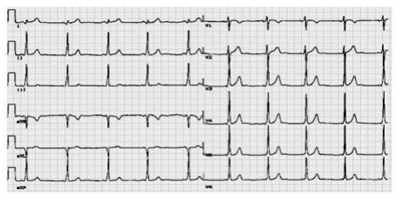
A justifica síncope cardíaca por mecanismo de reentrada através de vias acessórias no nódulo AV.
B deve ser complementado por ecocardiograma para caracterizar a etiologia da síncope.
C caracteriza síncope por ação vasovagal.
D afasta a etiologia neurocardiogênica.
Questão 77 · Síndrome de Wolf f ParkinsonWhite · Antiarrítmicos · 4000030820Considerando-se os seguintes medicamentos, o que NÃO deve ser usado no tratamento da brilação atrial com resposta ventricular alta, encontrada na síndrome de Wolff-Parkinson-White é: Respostas: 1 12 23 34 45 56 67
A amiodorona.
B ibutilide.
C procainamida.
D verapamil.